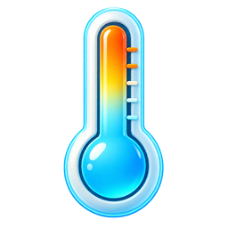
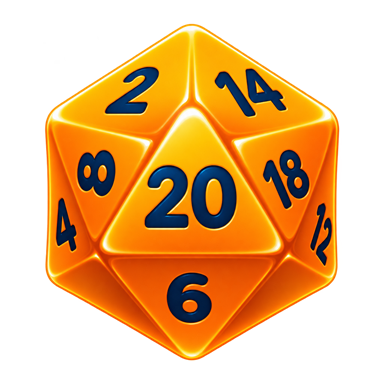
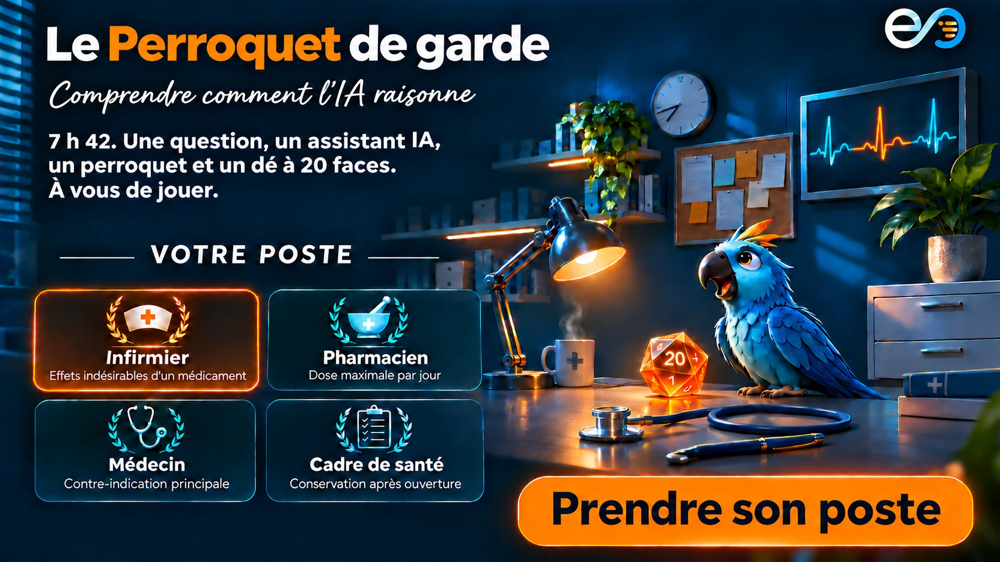

Sources
Se débloque au chapitre 3
Son : activé
Menu

Température
Tiède
Froid : prudent
Chaud : audacieux
Se débloque au chapitre 2

Lancer le dé
Espace
Les 20 faces du dé
FACE
14
Passer
La 3D ne peut pas s'afficher dans ce navigateur. Ouvrez le jeu dans une version récente de Chrome, Edge, Safari ou Firefox.

Écouter la présentation